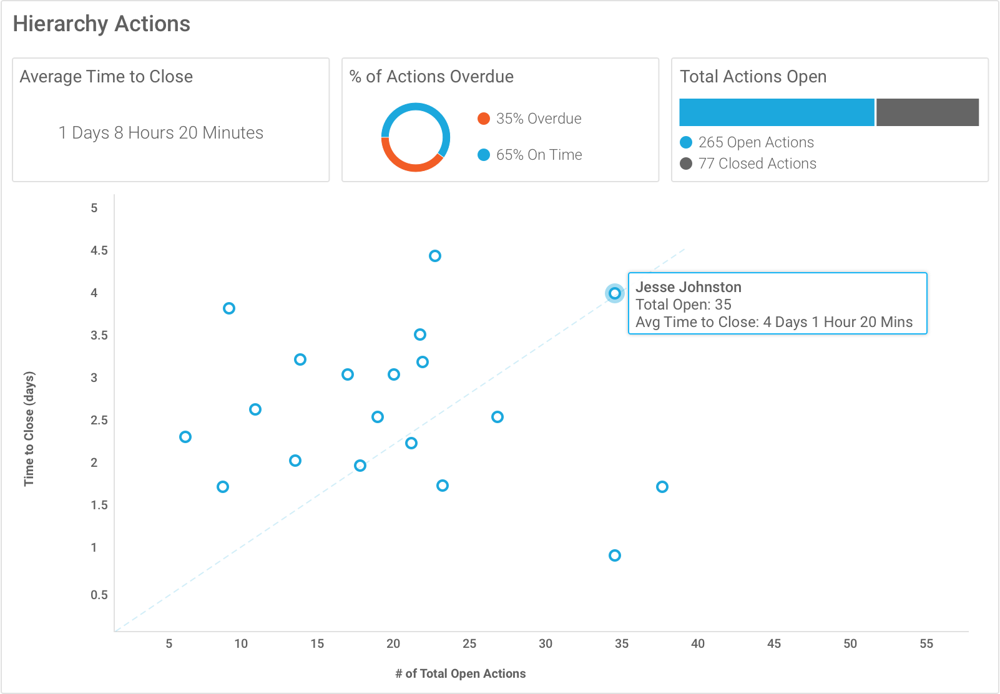
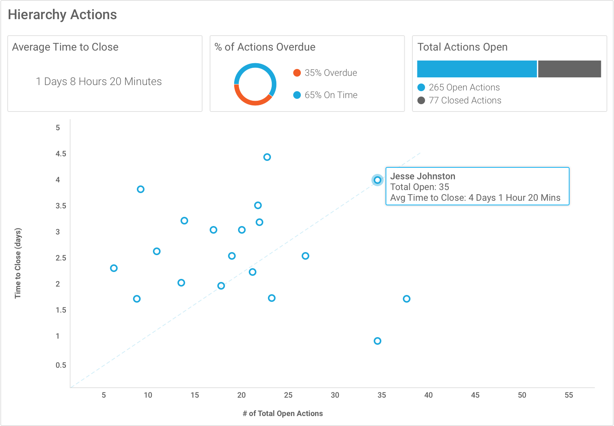

Role: User Experience Designer
Responsibilities: User Experience Design, User Testing, Visual Design, HTML/CSS/JS Prototyping
Companies use the ReponseTek's reporting platform to gain insights they can use to improve their organization. All levels within the company can use the reporting dashboard. Executive level users, managers and front line staff are just some of the different persona's that need to analyze real-time data to make adjustments to their day to day.
During this project I had the opportunity to work with many different types of data visualizations. I paired up with some talented business analysts to deliver reports that not only looked great but delivered meaningful insights.
We prioritized the reports based on client needs and requests over the months leading up to this project.
From the beginning of this project I worked side by side with some of the best developers ResponseTek has to offer. We quickly iterated through design concepts and jumped into prototyping fully functional reports with internal and external stakeholders.
 
